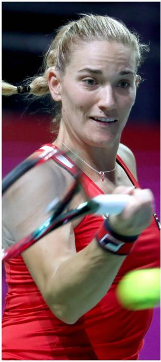

Bár a sportág jellegéből adódóan rengeteget utazom, fontos, hogy minden kötelezettségnek eleget tegyek. Egy szponzori kapcsolat akkor működik, ha a támogató is jól érzi magát benne és én is, ezért pedig tennem kell nekem is. A menedzsment szerencsére itt is segít, nehogy valami elkerülje a figyelmem. Például a versenyeimről is ők tájékoztatják a partnereket, így kicsit közelebb érezhetik magukat hozzám, aminek nagyon örülök.

Szilágyi Áron életében természetesen a londoni nyári játékok óta is az edzések és a versenyek élvezik a prioritást, de a menedzsmentjével olyan jól működő rendszert építettek fel az évek során, hogy azért a különösen fontos eseményeknek, megkereséseknek mindig szorít helyet és időt a versenynaptárában.

Az amerikai egyetemi évek nemcsak azért voltak meghatározóak számomra, mert ott értettem meg, önbizalom és hit nélkül a tehetség és a munka nem elég a sikerhez, hanem azért is, mert láttam, miként működik a sportmarketing-gépezet. Sokakban ez még mindig negatív érzetet kelt itthon, de szerencsére látszik a fejlődés, hiszen egyre több sportoló igyekszik élni a lehetőségeivel. Ráadásul ne felejtsük el, rengeteg jó ügy érdekében fel lehet használni a népszerűséget, ismertséget. Én is folyamatosan dolgozom a saját imázsom építésén, ezért hoztuk létre például az Iron-brandet, amely az Iron Lady szurkolói termékek mellett már utcai ruházattal is bővült, de akik találkoztak velem egy-egy rendezvényen, tudják, hogy ugyanaz a kedves, közvetlen, mosolygós bajai lány vagyok, akit a nagypapája háromévesen »bedobott a vízbe